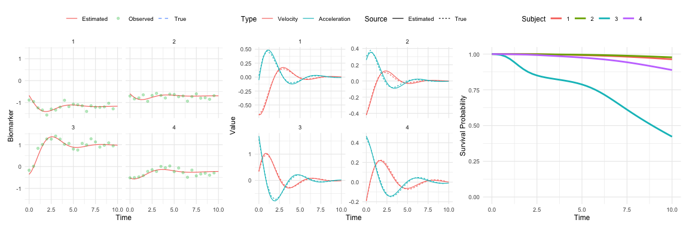

The JointODE package provides a unified framework for joint modeling of longitudinal biomarker measurements and time-to-event outcomes using ordinary differential equations (ODEs). This approach enables the simultaneous analysis of biomarker trajectories and their impact on survival outcomes.
Model Setup
The observed biomarker measurements are modeled as:
V_{ij}=m_i(T_{ij})+b_i+\varepsilon_{ij},\quad i=1,\ldots,n,\quad j=1,\ldots,n_i
where:
- V_{ij}: Observed biomarker value for subject i at time T_{ij}
- m_i(t): True underlying biomarker trajectory
- b_i\sim\mathcal{N}(0,\sigma_{b}^{2}): Subject-specific random intercept
- \varepsilon_{ij}\sim\mathcal{N}(0,\sigma_{e}^{2}): Measurement error
The biomarker trajectory evolution is characterized by the following second-order differential equation:
\ddot{m}_i(t) + 2 \xi_{i} \omega_{i} \dot{m}_i(t) + \omega_{i}^2 m_i(t) = \omega_{i}^2 \boldsymbol{X}_i(t)^{\top} \boldsymbol{\beta},
where \dot{m}_i(t) and \ddot{m}_i(t) denote the biomarker’s velocity and acceleration, respectively, and \boldsymbol{X}_i(t) denotes time-varying covariates. The parameters have the usual interpretations: \omega_{i} > 0 is the subject-specific natural frequency, and \xi_{i} is the subject-specific damping ratio.
Survival Sub-Model
The hazard function incorporates biomarker dynamics:
\lambda_i(t) = \lambda_{0}(t)\exp\left[\alpha_1 m_i(t) + \alpha_2 \dot{m}_i(t) + \mathbf{W}_i(t)^{\top}\boldsymbol{\phi}+b_{i}\right]
where:
- \lambda_{0}(t): Baseline hazard (e.g., Weibull, piecewise constant)
- \mathbf{W}_i(t): Time-dependent or time-independent covariates with effects \boldsymbol{\phi}
For detailed mathematical derivations including ODE formulation, likelihood construction, and EM algorithm specifics, see the technical documentation.
Installation
You can install the development version of JointODE from GitHub with:
# install.packages("pak")
pak::pak("ziyangg98/JointODE")Example
Here’s a basic example demonstrating typical usage:
library(JointODE)
#>
#> Attaching package: 'JointODE'
#> The following object is masked from 'package:stats':
#>
#> simulate
library(survival)
# Load example dataset
data(sim)
# Fit joint ODE model
fit <- JointODE(
longitudinal_formula = observed ~ x1 + x2,
survival_formula = Surv(time, status) ~ w1 + w2,
longitudinal_data = sim$data$longitudinal_data,
survival_data = sim$data$survival_data,
state = as.matrix(sim$data$state),
control = list(parallel = TRUE)
)
# Model summary
summary(fit)
#>
#> Call:
#> JointODE(longitudinal_formula = observed ~ x1 + x2, survival_formula = Surv(time,
#> status) ~ w1 + w2, longitudinal_data = sim$data$longitudinal_data,
#> survival_data = sim$data$survival_data, state = as.matrix(sim$data$state),
#> control = list(parallel = TRUE))
#>
#> Data Descriptives:
#> Longitudinal Process Survival Process
#> Number of Observations: 17254 Number of Events: 66 (33%)
#> Number of Subjects: 200
#>
#> AIC BIC logLik
#> -25631.696 -25539.344 12843.848
#>
#> Coefficients:
#> Longitudinal Process: Second-Order ODE Model
#> Estimate Std. Error z value Pr(>|z|)
#> -omega_n^2 -1.0386187 0.0014523 -715.17 <2e-16 ***
#> -2*xi*omega_n -0.8114514 0.0035434 -229.00 <2e-16 ***
#> (Intercept) -0.0190970 0.0007797 -24.49 <2e-16 ***
#> x1 0.5232784 0.0011520 454.22 <2e-16 ***
#> x2 -0.4848434 0.0009604 -504.86 <2e-16 ***
#> ---
#> Signif. codes: 0 '***' 0.001 '**' 0.01 '*' 0.05 '.' 0.1 ' ' 1
#>
#> ODE System Characteristics:
#> Estimate Std. Error z value Pr(>|z|)
#> T (period) 6.165266 0.004310 1430.3 <2e-16 ***
#> xi (damping ratio) 0.398111 0.001772 224.6 <2e-16 ***
#> ---
#> Signif. codes: 0 '***' 0.001 '**' 0.01 '*' 0.05 '.' 0.1 ' ' 1
#>
#> Survival Process: Proportional Hazards Model
#> Estimate Std. Error z value Pr(>|z|)
#> alpha_1 1.1809 0.2018 5.852 4.84e-09 ***
#> alpha_2 2.5347 0.7951 3.188 0.001433 **
#> w1 0.9473 0.1603 5.908 3.45e-09 ***
#> w2 -1.0031 0.2647 -3.789 0.000151 ***
#> ---
#> Signif. codes: 0 '***' 0.001 '**' 0.01 '*' 0.05 '.' 0.1 ' ' 1
#>
#> Baseline Hazard: B-spline with 3 basis functions
#> (Coefficients range: [-5.571, -2.338] )
#>
#> Variance Components:
#> Measurement Error SD: 0.117971
#> Random Effect Covariance Matrix:
#> [,1] [,2] [,3] [,4] [,5]
#> [1,] 0.12660 0.0514405 0.0013596 -0.0634974 0.05703
#> [2,] 0.05144 0.0306708 0.0008755 -0.0225755 0.02573
#> [3,] 0.00136 0.0008755 0.0078660 -0.0006165 0.00230
#> [4,] -0.06350 -0.0225755 -0.0006165 0.0444212 -0.02959
#> [5,] 0.05703 0.0257323 0.0023005 -0.0295888 0.03396
#>
#> Model Diagnostics:
#> C-index (Concordance): 0.354
#> Convergence: EM algorithm converged after 28 iterations
# Generate predictions
predictions <- predict(fit, times = seq(0, 10, by = 0.25))Visualization
#>
#> Attaching package: 'dplyr'
#> The following objects are masked from 'package:stats':
#>
#> filter, lag
#> The following objects are masked from 'package:base':
#>
#> intersect, setdiff, setequal, union
Code of Conduct
Please note that the JointODE project is released with a Contributor Code of Conduct. By contributing to this project, you agree to abide by its terms.